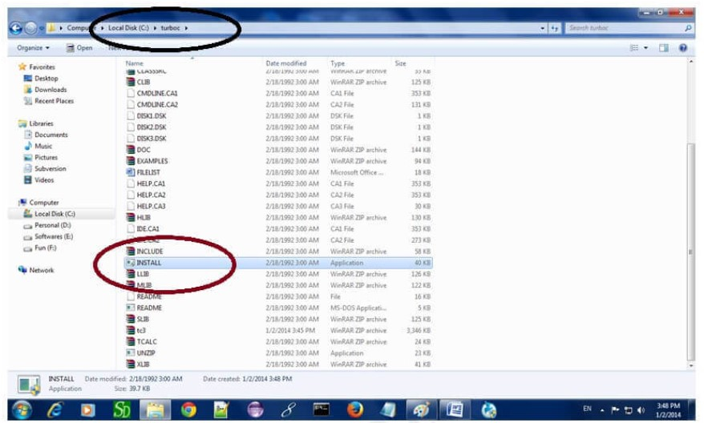
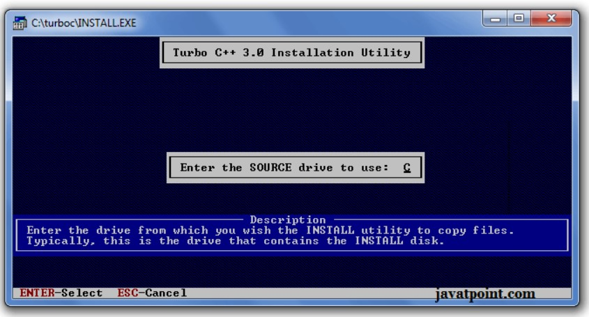
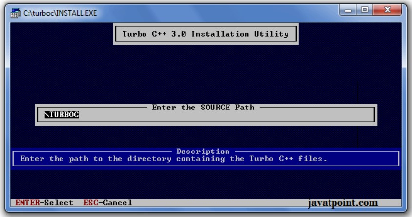
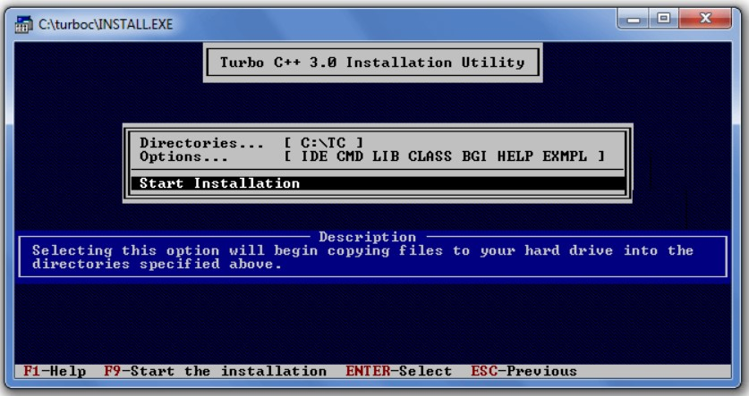
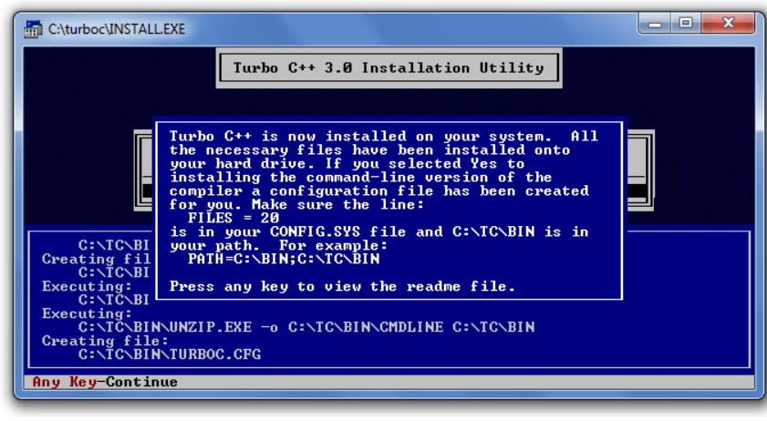
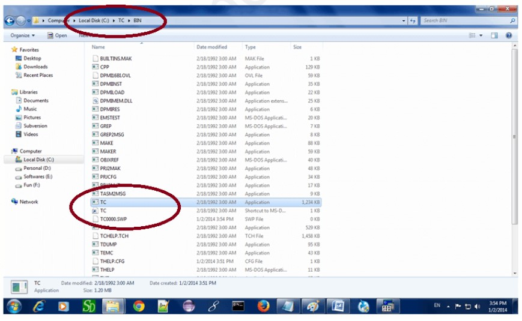

How to install C
here are many compilers available for c and c++. You need to download any one. Here, we are going to use Turbo C++. It will work for both C and C++. To install the Turbo C software, you need to follow following steps.
- Download Turbo C++
- Create turboc directory inside c drive and extract the tc3.zip inside c:\turboc
- Double click on install.exe file
- Click on the tc application file located inside c:\TC\BIN to write the c program
1) Download Turbo C++ software
You can download turbo c++ from many sites. download Turbo c++
2) Create turboc directory in c drive and extract the tc3.zip
Now, you need to create a new directory turboc inside the c: drive. Now extract the tc3.zip file in c:\truboc
directory.3) Double click on the install.exe file and follow steps
Now, click on the install icon located inside the c:\turboc
Now, click on the install icon located inside the c:\turboc
It will ask you to install c or not, press enter to install.

Change your drive to c, press c.
Press enter, it will look inside the c:\turboc directory for the required files.
Select Start installation by the down arrow key then press enter.
Now C is installed, press enter to read documentation or close the software.
4) Click on the tc application located inside c:\TC\BIN
Now double click on the tc icon located in c:\TC\BIN directory to write the c program.
In windows 7 or window 8, it will show a dialog block to ignore and close the application because fullscreen mode is not supported. Click on Ignore button.
Now it will showing following console.